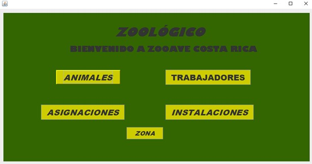

Sistema administrativo diseñado para registrar el estado de salud de los animales, asignar tareas a los trabajadores y supervisar el mantenimiento de las instalaciones.
Utiliza C# con una interfaz intuitiva.